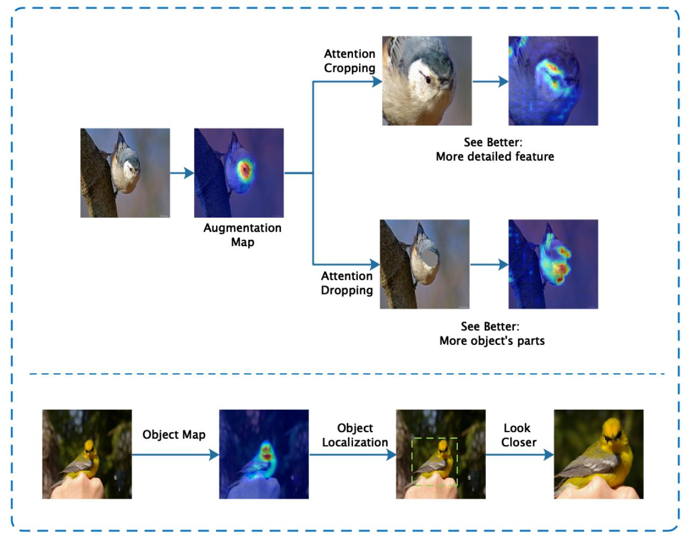
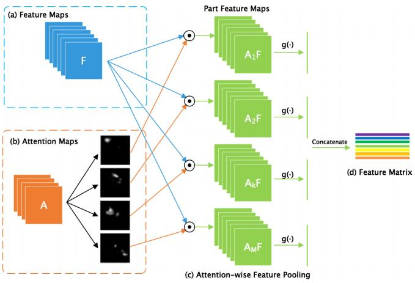
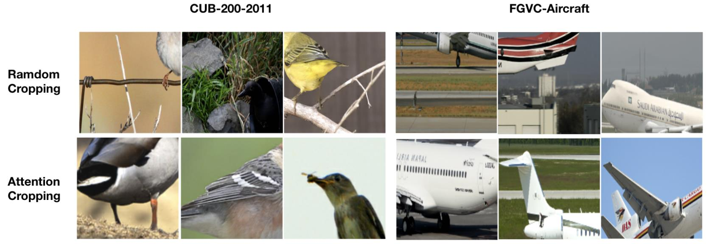
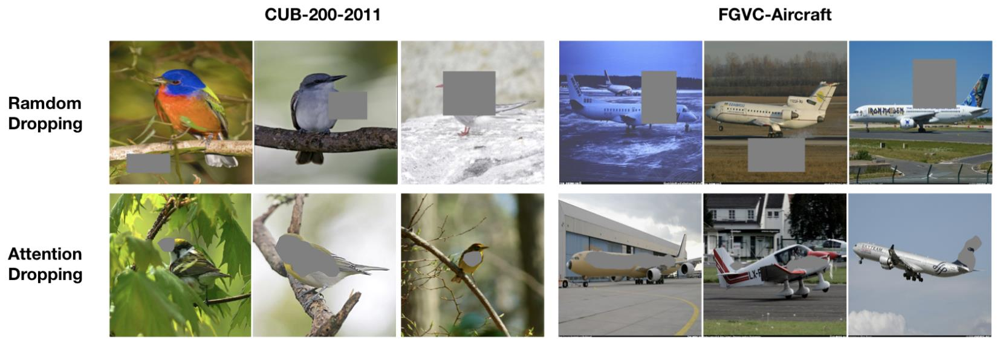
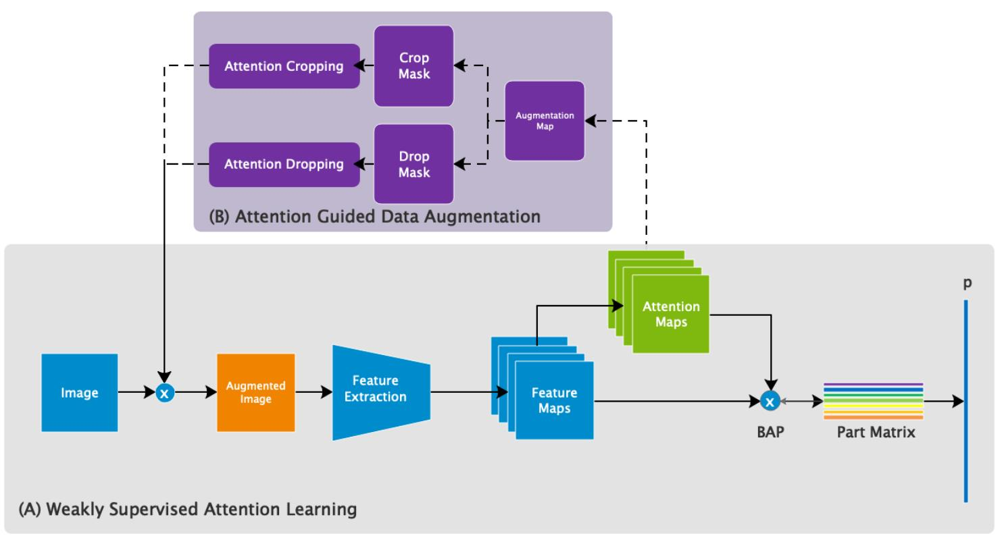
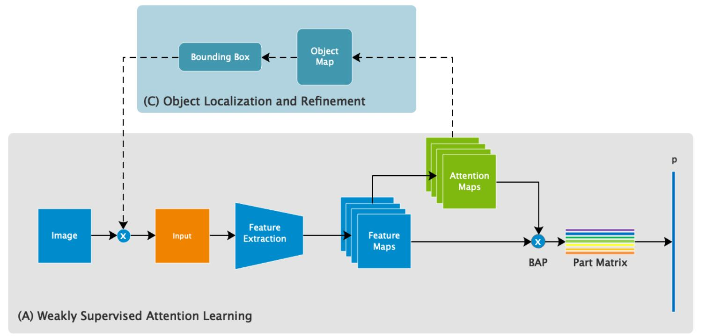
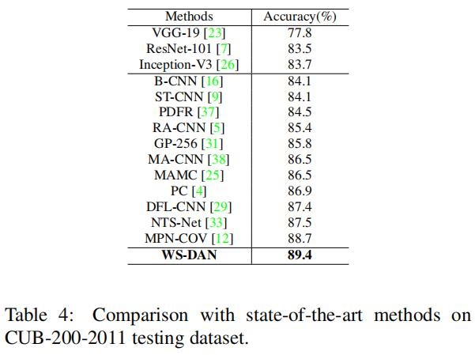
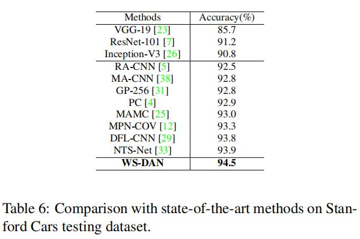
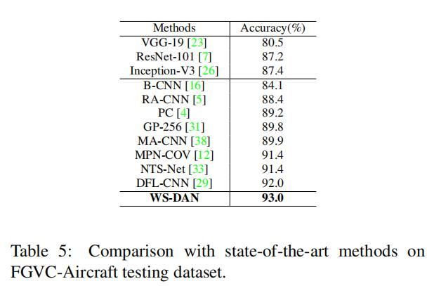

细粒度：WS-DAN¶
综述¶
论文地址：https://arxiv.org/pdf/1901.09891v2.pdf
源码地址(PyTorch版本)：https://github.com/GuYuc/WS-DAN.PyTorch
针对领域：细粒度图像分类(FGVC)
关键词：数据增广、弱监督学习、注意力机制、双线性池化
主要思想¶
本文主要是提出了一种基于注意力图的数据增强网络，通过将特征图传入卷积核大小为1*1的卷积层，得到注意力图，并且通过注意力正则化措施来监督约束注意力图的关注区域，利用该注意力图对原图像进行注意力裁剪与注意力下降两种数据扩充方式，再将扩充后的数据传入网络进行训练，进一步提高了网络对细粒度特征的学习和网络的泛化能力。作者参考《Bilinear CNNs for Fine-grained Visual Recognition》(论文笔记)，提出双线性注意力池化网络结构，有效地将特征图与注意力图的特征相融合，进一步传入全连接层进行分类预测。
在测试过程中，网络首先通过生成的注意力图得到原图像的注意力区域，之后对该区域进行裁剪放大，有效地过滤了无关的背景信息，最后将裁剪后的图片放入网络进行预测，进一步提高了网络的识别精度。

重要模块¶
双线性注意力池化¶
主干特征提取网络以resnet50为例，将layer4层的输出作为特征图(a:Feature Maps)，将得到的特征图传入卷积核大小为1*1的卷积层，最后经过标准化以及ReLU激活函数，得到最后的注意力图(b:Attention Maps) 注意：将注意力图首先经过标准化，再经过ReLU函数，可以将响应值(响应值越高，代表图片该区域所含的信息越丰富)低的部分(小于零的部分)归为零，最后的效果可以见下图橙色框部分：

得到特征图与注意力图之后，就是要考虑如何将两组数据进行特征融合，受论文《Bilinear CNNs for Fine-grained Visual Recognition》的启发，提出了双线性池化的操作。
双线性池化主要用于特征融合，对于从同一个样本提取出来的特征x和特征y(在这里相当于是从同一张图片提取出来的特征图与注意力图)，先进行特征双线性融合（相乘）后，再进行采样操作(全局平均采样或者全局最大采样)，最后再变成一个向量，得到融合后的特征，用于细粒度分类。
本篇文章中，得到的特征图依次与每张注意力图做点乘，将注意力图与特征图的数据相融合，得到M组部分特征图，公式如下：
注意力正则化¶
对于每个种类，我们都希望每张注意力图尽可能关注相同的部分。比如说，在CUB-200-2011的数据集中，假设我们希望第一张注意力图关注于鸟的头部、第二张注意力图关注于鸟的嘴部、第三张注意力图关注于鸟的翅膀，等等。虽然鸟的种类不同，但是我们希望注意力图关注的部位是一样的。
如果需要统一注意力图所关注的区域，就需要得到一个标准，每次训练的过程中，注意力关注点都需要不断靠近此标准。因此，本篇文章中设置全局特征中心ck，用来规范注意力的关注区域。
全局特征中心由特征矩阵所确定，训练开始初始化为全零矩阵，每训练一次，特征中心更新一次，更新公式如下：
首先让特征矩阵和特征中心做差，得到差异性，然后与原来的特征中心做和，做一个更新。如此重复下去，特征中心会逐渐趋于稳定，代表了整个数据集的特征(比如CUB-200-2011中，综合200类鸟的所有特征矩阵)。相当于，形成一种标准，该标准就是注意力图关注区域的标准，再通过构建损失函数：
让特征中心起到优化的作用，使网络得到的特征矩阵不断靠近特征中心，最终达到让注意力图逐渐关注相同区域的目的。特征中心起源于特征矩阵，进一步用来规范特征矩阵。
换一种方式理解，特征图经过双线性注意力池化操作生成特征矩阵，特征矩阵中的每一行数据只包含了注意力图所关注的部分(不被关注的部分被设置为0)，换句话说就是非零区域一致。如果第一张注意力图只关注鸟的嘴部，则特征矩阵中的第一行数据只有该图像中鸟的嘴部数据，图像数据中除了鸟的嘴部数据都被归为零，如果第二张注意力图只关注鸟的头部，则特征矩阵中的第二行数据只有该图像中鸟的头部数据，图像数据中除了鸟的头部数据都被归为零，依次类推，在这个例子中，全局特征中心的第一行数据应该包含了200类鸟的嘴部数据，所以如果最后得到的特征矩阵关注的不是鸟的嘴部，即fk与ck在第一行数据元素中相差比较大，会通过损失函数做出相应调整，让fk逐渐向ck偏移。设立ck相当于在本数据集中固定了注意力图的关注区域，也就是固定了零件关注区域
现实情况中，注意力图关注的区域可能比较复杂，不一定一张注意力图就准确无误地只关注鸟的一个部位，只是这么说更加方便理解。
基于注意力引导的数据增广¶
在传统的数据增广操作中，常用到随机随机裁剪、随机翻转等一系列随机操作，往往效果比较低效。当有了注意力图之后，我们可以根据注意力图做一些比较高效的数据增广操作，对于每张图的训练过程，我们随机选择两张注意力图用于之后的数据增广操作。当得到注意力图之后，首先进行归一化操作，公式如下：
注意力裁剪¶
为了进一步提高神经网络的特征提取能力，利用随机选择的注意力图，来确定物体的关键部位，再将关键部位放入模型中训练，可以进一步提高模型的识别精度。

第一行是随机裁剪，第二行是基于注意力图的裁剪，明显第二种方法更有效，通过放大关键部位，再放入网络训练，来有目的地提高网络细粒度特征提取的能力，提高了网络的识别精度。
首先，我们先确定一个阈值θ，然后通过对比注意力图上的元素和阈值θ的大小，来得到裁剪掩码，具体公式如下：
得到裁剪掩码后，我们就可以确定一个可以覆盖原始图像积极响应的区域(就是注意力所关注的区域)，并且通过放大该区域，可以实现放大细节的功能，从而更好地提取细粒度特征。(具体实现方法见源码解读)
注意力下降¶
注意力正则化监督了同一张注意力图尽量关注于同一个部位，但是还存在一个问题，不同的注意力图可能集中关注在相似的部位，为了鼓励注意力图能够代表多个有区分度的部位(也就是关注区域尽量不重复)，本篇文章采用注意力下降的方式，通过删除注意力关注的部位，来监督网络学习更多可用于注意力关注的区域。

第一行是随机删除，第二行是基于注意力图的删除，明显第二种删除方法更有目的性，通过抹去关键部位，再放入网络训练，来有目的地提高网络的泛化能力，提高了网络的鲁棒性。
实现方法和注意力裁剪部分的实现方法类似，我们首先确定一个阈值θ，然后利用下面的公式得到注意力下降掩码。
通过利用该掩码，可以删去原始图像的响应区域，再将删除后的图像放入网络训练，可以鼓励网络关注更多的区域。(具体实现方法见源码解读)
物体定位以及细化¶
注意力图不仅可以在训练过程中用来扩充数据，来增强网络的特征提取能力以及泛化能力，还可以利用注意力图在测试过程中输出图片的关注区域，通过放大其关注区域，可以预测物体对象的整个区域，减少背景的干扰因素，提高测试过程的识别准确率，注意力的关注区域生成公式如下：
训练与测试流程¶
具体的训练流程可以见下图：

首先，将原图像x1经过网络主干部分(特征提取与双线性注意力池化)，得到特征矩阵f1与注意力图，一方面，特征矩阵f1传入全连接层，可以得到第一个预测结果y1；另一方面，对于每张训练图片，都相应选择两张注意力图，用于注意力裁剪和注意力下降，得到两张数据增强后的图片x2、x3，再将这两张图片分别传入网络，与第一张图片x1类似，分别得到两个预测值y2、y3。三个预测值与输出的特征矩阵f1共同优化网络参数，具体的损失函数请见下文
具体的测试流程可以见下图：

原图像x1首先经过网络主干部分，生成特征矩阵f1以及注意力图，一方面，通过将特征矩阵传入全连接层，可以得到一个预测结果y1；另一方面，注意力图可以得到注意力区域，再利用注意力区域裁剪原图像，得到物体所在图像x2，再将x2传入网络，与x1类似，得到第二个预测结果y2。最后，两种预测结果取平均值得到最后的预测结果。
损失函数¶
最终的损失由四部分损失共同计算得到，设L是交叉熵损失函数，计算公式如下：
分类损失与特征中心的损失共同优化网络参数。
精度对比¶
CUB-200-2011

Stanford Cars

Aircraft

总结¶
本文通过将弱监督学习和数据增强相结合，提出了一种弱监督数据注意力网络，弱监督学习为数据增强提供空间分布(即注意力)，数据增强鼓励学习多样性的注意力，他们相互促进，共同优化网络，使得网络能够学到来自多个局部区域的判别图像特征。
注：以上内容仅是笔者的个人见解，若有错误，欢迎指正。
最后一次修改日期：2021年9月6日